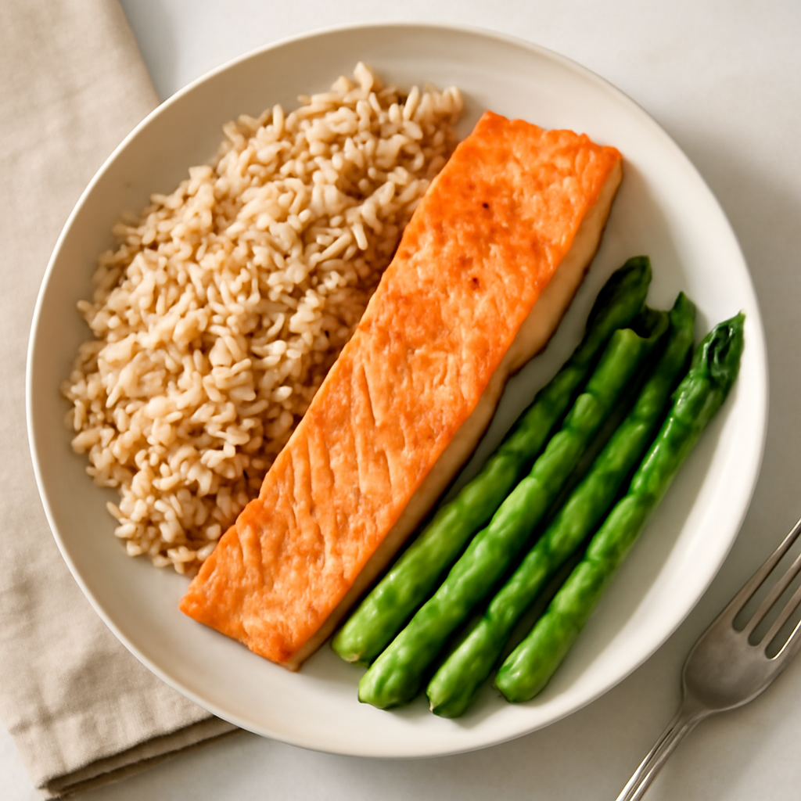

Tuesday — Oven-Baked Salmon with Brown Rice and Asparagus

Cook Time:
30 minutes
Method:
Oven
salmon
healthy
family recipe
Ingredients for 6
6 salmon fillets
2 cups brown rice
2 cups asparagus (trimmed)
2 tbsp olive oil
1 lemon (sliced)
Salt and pepper to taste
Instructions
Preheat oven to 400°F (200°C).
Spread asparagus on a baking sheet, drizzle with olive oil and season.
Place salmon fillets on another baking sheet, season with salt and pepper, and top with lemon slices.
Bake asparagus for 15 minutes and salmon for 12-15 minutes until flakey.
Cook brown rice according to package instructions and serve.
Toddler Notes
Flake salmon into small pieces for easier eating.
Cut asparagus into small, manageable pieces.
← Back to weekly plan